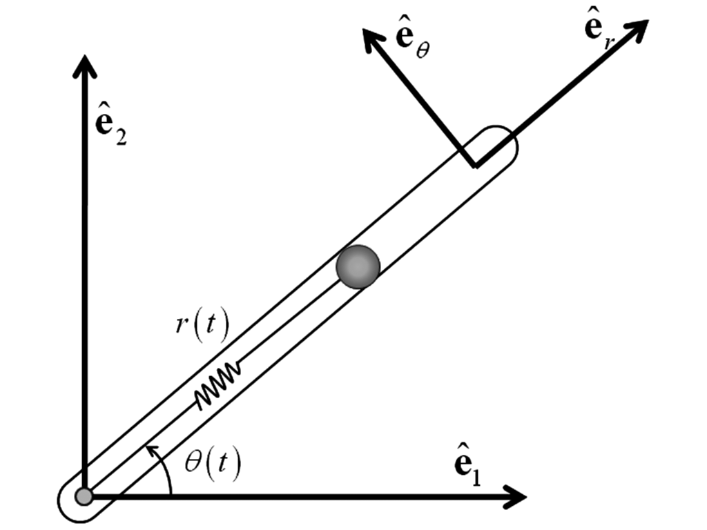

Example 1: Point Mass in a Rotating Tube¶
Description of the problem¶
{kind=link}
Consider the dynamics of a point mass in a rotating tube governed by a second order differential equation given by
where the new variable \(\delta r(t) = r(t) - l\) has been introduced, together with the definition of \(l\), as the free length of the spring (when no force is applied on it, i.e., Hooke’s Law applies as \(F_s = -k\delta r\)). The function \(u(t)\) is the radial control force applied on the point mass, and the parameters \(k\) and \(m\) are the spring stiffness and the mass of the point mass of interest. The time variation in this linear system is brought about by the profile of the angular velocity of the rotating tube \(\dot{\theta}(t)\). Choosing the origin of the coordinate system at the position \(r_0 = l\) (with no loss of generality), the second order differential equation is given by
where the redefinition of the origin renders the system linear time varying without any extra forcing functions. In the first order state space form (\(x_1(t) = \delta r(t), x_2(t) = \delta\dot{r}(t)\)), the equations can be written as
together with the measurement equations
To compare with the identified models, analytical discrete-time models are generated by computing the state transition matrix (equivalent \(A_k\)) and the convolution integrals (equivalent \(B_k\) with a zero order hold assumption on the inputs). Because the system matrices are time varying, matrix differential equations are given by
\(\forall \ t \in [t_k, t_{k+1}]\), with initial conditions
such that
would represent the equivalent discrete-time varying system (true model). For the current investigation, the time variation profile of \(\dot{\theta}(t) = 3\sin(\frac{1}{2}t)\), with the mass and stiffness of the system chosen to be \(m=1\) and \(k=10\), respectively. The time interval of interest is \(10\) seconds, with the discretization sampling frequency set to be \(10\) Hz. In that example, \(u(t) = 0\) and this is considered an initial condition response experiment.
Code using systemID¶
## Imports
from systemID.ClassesGeneral.ClassSystem import *
from systemID.ClassesGeneral.ClassSignal import *
from systemID.ClassesGeneral.ClassExperiments import *
from systemID.ClassesSystemID.ClassERA import TVERAFromInitialConditionResponse
from systemID.SystemIDAlgorithms.IdentificationInitialCondition import *
from systemID.SystemIDAlgorithms.CorrectSystemForEigenvaluesCheck import *
from systemID.ClassesDynamics.ClassPointMassInRotatingTubeDynamics import PointMassInRotatingTubeDynamics
## Define parameters
dt = 0.1
mass = 1
spring_constant = 10
def theta_dot(t):
return 3 * np.sin(t/2)
## Define dynamics
dynamics = PointMassInRotatingTubeDynamics(dt, mass, spring_constant, theta_dot)
## Define Training Experiments
frequency = 1 / dt
total_time_training = 11
number_steps_training = int(total_time_training * frequency + 1)
number_experiments = 20
input_signals_training = []
systems_training = []
for i in range(number_experiments):
input_signals_training.append(DiscreteSignal(dynamics.input_dimension, total_time_training, frequency))
systems_training.append(DiscreteLinearSystem(frequency, dynamics.state_dimension, dynamics.input_dimension, dynamics.output_dimension, [(np.random.randn(2), 0)], 'Original System', dynamics.A, dynamics.B, dynamics.C, dynamics.D))
training_experiments = Experiments(systems_training, input_signals_training)
## TVERAIC
assumed_state_dimension = dynamics.state_dimension
p = 10
tveraic = TVERAFromInitialConditionResponse(training_experiments, assumed_state_dimension, p)
## Testing data
total_time_testing = 10
input_signal_testing = DiscreteSignal(dynamics.input_dimension, total_time_testing, frequency)
initial_states = [(np.array([2, -1]), 0)]
true_system = DiscreteLinearSystem(frequency, dynamics.state_dimension, dynamics.input_dimension, dynamics.output_dimension, initial_states, 'True System', dynamics.A, dynamics.B, dynamics.C, dynamics.D)
## Output
true_output = OutputSignal(input_signal_testing, true_system)
## Identify IC
x0_id = identificationInitialCondition(input_signal_testing, true_output, tveraic.A, tveraic.B, tveraic.C, tveraic.D, 0, p)
## Identified System
identified_system = DiscreteLinearSystem(frequency, assumed_state_dimension, dynamics.input_dimension, dynamics.output_dimension, [(x0_id, 0)], 'Identified System', tveraic.A, tveraic.B, tveraic.C, tveraic.D)
## Identified Output Signal
identified_output = OutputSignal(input_signal_testing, identified_system)
{kind=link}
{kind=link}
{kind=link}
{kind=link}